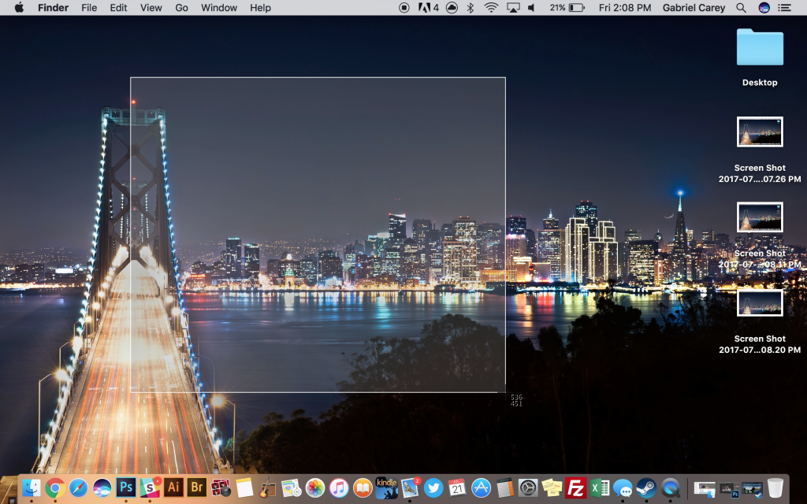
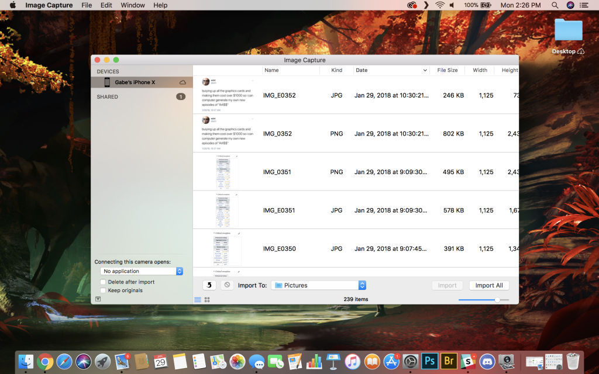
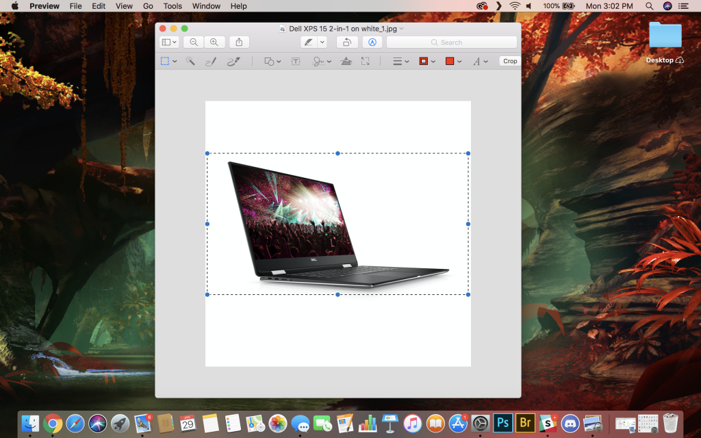
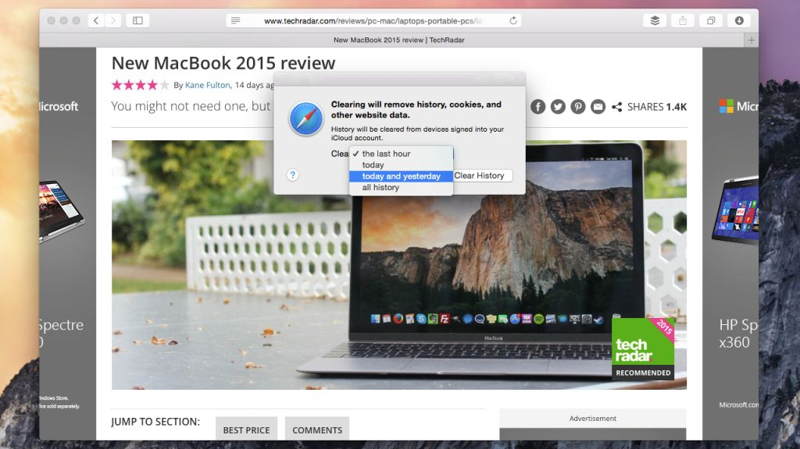

50+ tricks for Macbook
1. Do unit conversions in Spotlight
So, everyone knows that you can do basic calculations in Spotlight, but beginning with macOS High Sierra, you can take that a step further: unit conversions. You can do specific unit conversions if the need arises – say, “13 stone in pounds” – but, you can also just type in the amount and unit you want to convert, and your Mac will suggest not just the likely conversion, but also a handful of alternatives.
Type in something like ‘$1,299’ and you’ll immediately be told what that is in pounds Sterling (or whatever your native currency that’s set in the Language & Region pane of System Preferences), and then the window will show more results, showing Euros Yen and so on. You can also type the specific currency you’re looking for, for instance “$1,299 to AUD” if the currency conversion you’re looking for doesn’t appear.
2. Talk to and listen to your Mac!
Way back before macOS Sierra launched in 2016, the Mac’s ability to listen to you and talk back was already impressive through Dictation. However, that’s been completely topped by Siri’s arrival on Apple’s Mac lineup.
You can either hold down Command and Space for a couple seconds, or simply click the Siri button on your Dock or Menu Bar, and summon the same Siri you’ve grown accustomed to on your iPhone. And, if you have a newer Mac, like the 2018 MacBook Pro, you can just say ‘Hey Siri’. And, as a bonus, this version of Siri is much more useful.
Beyond the questions you may usually ask, like the weather or who’s playing in the playoff game, Siri on macOS Mojave and Catalina can toggle system functions like Wi-Fi or Bluetooth, or even pull up individual files stored on the system, based on what you tell Siri about the file. Siri can even launch apps for you.
Just press Command+Space and get to asking.
3. Run Windows
We know – no self-respecting Mac fan actually wants to run Windows. But sometimes it comes in handy, whether to play the latest games or run some niche piece of software that has no Mac equivalent.
You can either run Windows alongside macOS with a virtualization app like VMware Fusion, Parallels Desktop or VirtualBox, or partition your hard drive to install windows on to run it full bore on your hardware using Boot Camp Assistant (in your Utilities folder).
4. Take screenshots of any size

For Windows users, taking screenshots can be a chore. You can either use the PrtSc key to capture the entirety of your display or use the Snipping Tool to snatch but a portion. Of course, some keyboards aren’t compatible with the shortcut and opening a separate app to take a screenshot is a bit of a hassle. Luckily, on a Mac, the process is streamlined.
It’s simple, to take a snap of your entire screen, simply press Shift + Command + 3 at the same time, and the screenshot will be stored on your desktop. If you just want a portion of the screen, the shortcut is Shift + Command + 4 with the same output directory. To only capture an individual window, you can press Shift + Command + 4, then hit space and click the window you’re trying to capture.
Lastly, if you have a fancy new MacBook Pro featuring the Touch Bar, press Shift-Command-6 to take a snapshot of that little OLED strip. No matter the case, taking a screenshot on a Mac requires nothing more than memorizing a few different keystroke combos.
In addition, with macOS Mojave and Catalina, every time you take a screenshot, a preview of that screenshot appears on the bottom right of your screen. You can click on this preview to bring up a markup window, add notes to the image and save them. It’s an extremely nifty feature for productivity.
5. Automatically hide and show the menu bar
The menu bar has been a fixture on the Mac since it launched in 1984, but since OS X El Capitan, you can hide the menu bar. Open System Preferences, go to General, then click "Automatically hide and show the menu bar."
When you tick this box off, the menu bar will reappear as you glide your mouse arrow towards the top of the screen, allowing you to get at all your menus.
6. Type exotic characters
In addition to all the letters and symbols you see on your keyboard, you’d be surprised at the bewildering array of special characters you can type on your Mac. You may already be familiar with typing accents such as for café (in which case you type either Option+E then E again or, on OS X 10.7 or later, hold down the E until you get extra options) but you’ll find there are many, many more.
Go to the Edit menu of most apps and you'll see Special Characters at the bottom. This panel gives you access to a huge range of symbols you can drag into your documents. Not all apps or operating systems support them, but these are mostly part of the cross-platform Unicode standard. There are probably more than you see at first, too; click the cog to reveal more.
Emoji (those fun, colourful characters available in OS X 10.7 or later) are a notable exception to this cross-platform world. They're not Apple-only, but your recipient might not be able to see them.
7. Sign PDFs right in Mail
It might be the 21st century, but we're still using squiggles on a piece of paper to agree to all manner of things. If you are emailed a PDF to sign, though, you don't have to faff about printing it, signing it, then scanning it back in: you can actually sign it right in Mail.
Drag a PDF into the email you’re sending, hover over it then at the top right you’ll see a little button appear. Click it, and you get a range of Markup options, including one for signing documents. What’s more, you can either add your signature by holding a signed piece of paper up to the webcam on your Mac – and it does a fantastic job of cutting it out of the background – or by drawing on your trackpad.
Got an iPad stylus? Try using that instead of your finger!
8. Batch rename files
In OS X releases before Yosemite, renaming a group of files at once either meant third-party software or rolling your own rename script using something like Automator or AppleScript. These days, however, you can just select a group of files then select Rename either from the right-click contextual menu or from the drop-down button marked with a cog icon in Finder windows.
When you do, you get the option of adding text, replacing text, or applying a format such as a name and an automatically incrementing counter.
9. Share easily with friends
In various places in OS X and macOS you see the option of sharing things to friends and contacts from a little Share button that looks like an arrow going up out of a box. The best bit, though, is that Macs keep track of how and to whom you most often share stuff.
So, if you're in the habit of sharing funny links with a friend and AirDropping files to a colleague sitting next to you, these options will get stuck to the bottom of the share menu to make it easy to pick those options next time.
10. Use Split Screen
Working with two windows or apps side-by-side became much easier since OS X 10.11 El Capitan, thanks to Split Screen view. If you’re still on macOS Mojave or older, you can hold down a left-click on an app's green maximize button in the top-left hand side, then drag it to be positioned on the left or right-hand side of the display.
If you have macOS Catalina installed, it’s a bit different. You simply left-click and hold on that green maximum button, which brings out a dropdown menu in which you can choose to Enter Full Screen, Tile Window to Left of Screen, or Tile Window to Right of Screen. In addition, if you’ve got a secondary screen, this menu will also give you the option to move the active window to that screen.
11. Quickly import with Image Capture

Even though you could theoretically import photos from your iPhone or DSLR manually via a pair of Finder windows, an easier way to do so is by using Image Capture. The long-standing feature isn’t new to macOS, but it has been overlooked by an overwhelming number of Mac newcomers. In it, you can choose to import all of your camera’s photos at once, directly to the folder of your choosing, or better yet, you can pick and choose which photos to store on your Mac while deciding whether to keep or delete the originals one by one.
What’s more, you can also connect wirelessly to a scanner to import scanned documents or photos to the directory of your preference. You can also link your camera to any macOS application that you want. So if you want Photoshop to open every time you connect your iPhone, Image Capture can be configured to make that happen.
12. Annotate PDFs and images
Preview is an incredibly powerful tool, and it’ll only get more powerful in macOS Mojave. Beyond letting you, well, preview PDFs and images, Preview allows for a ton of annotations for PDF that are compatible with Adobe’s PDF app, Acrobat, which is used by Windows users and companies – making it easy to share annotated documents with colleagues, regardless of the platform they use.
Make sure the Edit Toolbar is visible (from the View menu) and you'll see you've got options for drawing shapes, arrows, speech and thought bubbles and more. There's also the option to highlight text in different colours, strikethrough some text, add notes and type some text into boxes.
13. Change your file and folder icons to whatever you want
As a Mac user, you ought to be accustomed to everything being beautiful. After all, the graphical user interface has been a selling point for Apple computers since the original Macintosh. So, of course, you don’t want your experience hindered by ugly desktop icons that can easily be replaced with the images of your choosing.
Actually doing this is easier than you might think. No, you don’t need to download a sketchy third-party program to change the thumbnail images that appear when you save important stuff to the forefront of your computer. Instead, just right click the document and select ‘Get Info’ then copy the preview image you want to use in Preview (or your preferred image editing app).
After that, click the existing document thumbnail in the ‘Get Info’ window and press Command + V to paste the icon from your editor to the file info window. Voilà, your files are now way prettier and easily recognizable!
14. Crop, resize and tweak images

One of the most under-appreciated apps on macOS, Preview is hugely powerful, and even for us at TechRadar, it can perform tasks that we’d usually be stuck using a more expensive and elaborate app such as Photoshop for. Trust us: open an image in Preview and poke around the app’s menus and interface to see just what it’s capable of.
For example, you can crop your image. Draw a selection with the regular Rectangular Selection tool then either hit
Command+K or choose Crop from the Tools menu. Alternatively, show the Edit Toolbar and make a more complex selection either with the Instant Alpha tool or use the Smart Lasso.
15. Find the Wi-Fi password for your other devices

One unique thing Macs can do that other computers can’t is remember all of your passwords and vividly recall them back to you using an Apple feature called Keychain. The built-in software that accompanies Keychain is called Keychain Access, wherein the lot of your private details are stored. You’d be surprised, but the area this comes in handy the most is with Wi-Fi connections.
If you ever find yourself in an unfamiliar place, or even if you’ve just forgotten your own Wi-Fi password, you can use Keychain Access on your Mac to find it. The process is straightforward: open up Keychain Access by searching for it in Spotlight, search the name of the connection and double-click the iCloud Keychain corresponding to the SSID you’re looking for.
From there, click ‘Show password’ and enter the Keychain password that you set earlier. You’ll then be greeted by the elusive Wi-Fi password that you’re far too anxious to ask for. For future reference, however, it’s healthy to talk to people.
16. Make a keyboard shortcut for anything
Keyboard shortcuts are great for saving time, but you're not limited to just the shortcuts put in by developers; if there's a particular menu option you use all the time that doesn't have a shortcut, you can create it yourself.
Go to System Preferences > Keyboard > App Shortcuts. Click the + button to add a new shortcut. You can choose which app you want to apply it to from the drop-down list, but you must know the exact name of the menu command to type into the next box, including the correct case and any special characters such as ellipses. Lastly, choose a unique key combination to invoke the command, then click Add.
17. Use Automator and Services for speed

Automator is a tool built into OS X that enables you to build your own workflows of commands, making complex tasks much easier in the future. Use it to build your own little apps that perform a specific task, to make a workflow to modify batches of files, or to create new Services, which are functions you can access from a right-click. You could use Automator to rename a large number of files, to convert images to a different file type, to turn text files in a folder to audio files, and much more.
18. Change how Notifications Center groups notifications
In the old days, before El Capitan, OS X defaulted to grouping items in Notification Center by app. Since then, Apple has changed things up and now groups them by date instead. For example, all your notifications from today will show up together, which can be useful for seeing what you missed while you were stuck in that long meeting.
If you prefer the old per-app grouping, though, go to System Preferences > Notifications, then change the sort order as you please: look for the pop-up menu labelled "Notification Center sort order." Play with the different options and see which one works for you.
19. View someone's screen remotely
One really easy way to view someone else’s screen or even control their Mac over the internet – which is invaluable if you’re trying to help a relative troubleshoot their computer problems – is to launch Screen Sharing by searching for it with Spotlight then entering the Apple ID of the person you’re trying to contact. If you or they don’t know it, just have them look in the iCloud pane of System Preferences. And, while you’re in that screen, make sure they have Screen Sharing enabled in the Sharing pane of System Preferences.
They'll be asked to grant you permission to view their screen, and they can also then click on the screen sharing icon in the menu bar and grant you the ability to virtually, remotely control their mouse and keyboard too.
20. Send and receive SMSs on your Mac (and more!)
When someone sends an SMS – a text message in the original mobile phone sense – to your iPhone, it appears in a green bubble rather than a blue one, as would be the case if someone sends you an iMessage. Before Yosemite, SMSs would only appear on your iPhone where you'd have to peck out a reply, but now you can have them come into your Mac or other iOS devices when they arrive so you can reply to them from there too.
Your iPhone needs to be running iOS 8.1, but once it is, and once you're signed into your iMessage account that also has your phone number linked to it both on your iPhone and on your Mac or other iOS devices, turn on the Text Message Forwarding option under Settings > Messages on your iPhone. Boom!
21. Change the default file type of screenshots
If you’re like us, you take screenshots all the time – whenever you see something important, funny or interesting that you need to save for your records, or even share with your friends. Unfortunately, on macOS Mojave your screenshots are defaulted to save as PNGs, but you can change that.
If you want to save your Screenshots as JPGs, head into Terminal and type ‘defaults write com.apple.screencapture type JPG’ then hit enter. Once that’s done, the change will go into effect once you restart your Mac. If you can’t wait that long, you can force the change to go through by typing “KillAll SystemUIServer” and hit enter and the UI will restart.
If you want to go back, you can type “defaults write com.apple.screencapture type PNG” and then follow the same steps to go back to the default.
22. Name conversation threads
If you have tons of iMessage conversations going on at any given time like we do, it can be extremely easy to lose track of who said what, where and when, which is especially true if you regularly use multi-people chats and mix work and pleasure. Ever since OS X Yosemite, however, you can name group chats by clicking Details at the top right, then typing a name at the top.
You could do this for individual, disposable conversations (“Meeting up for the Cup Final this weekend” or “Promo activity for the new launch”). Or, you can use iMessage like and old IRC chatroom, creating one called “Banter” which you can your close friends can regularly pop in for some general chat.
23. Record your iPhone or iPad's scree
With Yosemite, you can now record whatever happens on the screen of your iPhone, iPad or iPod touch, which isn't just useful for developers to show off the apps and games they build, but can also be great for things like creating little tutorials or even just recording a bug so you can help a developer or a company fix it.
To use this feature, you just connect your iOS device up to your Mac using its cable, then launch QuickTime Player. The chose New Movie Recording from the File menu and then, if it's not already selected for you, choose your connected iOS device as the 'camera' source from the drop-down menu next to the record button. Choose whether you want to record sound (either from a built-in or external mic, or the audio the iOS device itself is producing) from the same menu, then click the record icon. Once you're done, you can trim the clip (⌘T) and then easily share it to, for example, YouTube.
24. Adjust the volume in smaller increments
When you use the volume up and down keys on your Mac's keyboard, the difference between one tap and the next can actually be pretty big – especially if you're driving some meaty external speakers. Hold down ⌥ and ⇧ as you tap those keys, though, and the increments become much smaller.
Here’s a bonus tip: if the audible feedback when you change the volume gets on your nerves, you can turn it off in System Preferences, but here’s the clever bit – you can temporarily toggle it back on by holding ⇧ when you adjust the volume – handy when you’re not sure whether your Mac isn’t making a noise because something is broken.
25. Share your purchases with your family
Up to six people in the same family can share purchases through the macOS Family Sharing feature. As a parent, this is appealing because it will let you approve or reject App Store purchases your kids make on your card – and you’ll get other benefits such as easily being able to see where everyone is, and getting a shared family calendar.
It's easy to set up, too. Go to the iCloud section of System Preferences and click Set Up Family, then follow the prompts. If you need more help with Family Sharing generally, check here, or if you just want to get started sharing purchases, go to here.
It’s even easier if you have upgraded to macOS Catalina. All you need to do is go to System Preferences and click on Family Sharing located next to Apple ID.
26. Use your iPad as a secondary Mac display
To use Sidecar, just follow these steps: First, click the Airplay icon in the menu bar on your computer then select the iPad you’d like to use. This lets you connect the two devices wirelessly. To use a wired connection, simply connect the two with a compatible cable.
Once the two are connected, whether wirelessly or via cable, the Sidecar icon will replace Airplay icon on the menu bar. Click the Sidecar icon, and select “Use As Separate Display” if you want to utilize it as an extended display or “Mirror Built-in Retina Display” to use it as a mirrored display.
27. Switch audio source/output from the menu bar
If you have speakers or headphones set up with your Mac, and if you have a headset or microphone connected, you may find yourself wanting to switch between different inputs or outputs, but this doesn’t have to mean a slog to System Preferences each time.
Just hold Option and click the volume adjuster in the menu bar (or press on one of the volume buttons on your keyboard). This will bring up a list of audio inputs and outputs. You can then select the one you want. Keep in mind though, that it’s limited in the amount of outputs it can display, so this option is limiting for more complex setups.
28. Store anything you like in iCloud Drive
It used to be the case that the only files you could store on iCloud were from specially-built apps such as Apple's iWork suite, but now we have the upgraded iCloud Drive in macOS Sierra.
Now, in macOS High Sierra, you can chuck any file you like onto either the Desktop or Documents folder, in addition to the iCloud Drive icon in the Finder sidebar, and those files and folders will be synced automatically. Those special, “blessed” apps still get their own folders, but you can create your own or just put things into the iCloud Drive loose via the Desktop and Documents folders.
All those files will sync to other Macs signed in with your Apple ID (so long as you've enabled iCloud Drive on them) and will also be available through icloud.com. On iOS, apps that can use iCloud will usually default to opening files from their special folder, but should also allow you to browse through your entire iCloud Drive to open files stored elsewhere.
29. Cure an insomniac Mac
You might find that occasionally when you close your MacBook's lid or pick Sleep from the Apple menu on your iMac or Mac mini that it resolutely refuses to go to sleep.
Luckily, it’s not hard to get to the bottom of this problem with your Mac. Ever since OS X Yosemite, you can choose from the View > Column menu when you’re on Activity Monitor’s CPU tab to show a column of processes that are preventing sleep. Click this column header to sort by it and then you can easily find which apps are keeping your Mac awake, then quit them if necessary.
30. Quick searching within sites
Now, what Safari can do is look at that URL and work out that it's a search and, just like you could, realize that if you wanted to search Amazon for 'iMac' instead of 'MacBook', then rather than waiting for the amazon.com homepage to appear before typing "iMac" into the search field and waiting for the results to load, Safari could send us straight to http://www.amazon.com/s/ref=nb_sb_noss_2?url=search-alias%3Daps&field-keywords=imac.
See that last word in the URL change? To make that happen, all you have to do is type 'amazon iMac' into Safari's search bar and then you'll see one of the options is 'Search amazon.com for imac'; click on this, and you'll go straight to the results.
You have to do a search – any search – in a site first before Safari can recognize the syntax for a search string, but when you do, you'll see the sites listed in the Search tab of Safari's preferences.
You can even type just a part of the target site's URL. So long as you've searched once on Wikipedia, for example, you can type 'wiki apple' and you'll see the option to search Wikipedia for "apple".
31. Close tabs left open on other devices
Whether because you suddenly realise you've left a dodgy tab open on an iPad you've just handed to a colleague or because it's just flat-out easier to go through and close a bunch of tabs on your Mac rather than on an iOS device, you should know that you can close tabs open on any device signed into your Apple ID from Safari since Yosemite.
Click the icon that looks like two overlapping squares in Safari (or choose Show All Tabs from the View menu) and you'll see all your open tabs on all your devices. Hover over each and you'll see a close button you can click. (This also works from iOS to Mac; swipe right to left on a cloud tab in its tab view and tap Delete; that tab will then be closed on the Mac.)
32. Share (some) contact details
You can easily send someone your contact details either by doing it the old-fashioned way of dragging a contact card out of the Contacts app and then attaching it to an email, say, or by using the new Share commands since Yosemite, but the problem with this basic method is that you might have information on your card you don't want others to have.
For example, you might have defined a relationship with your spouse so that on your iPhone you can say "send a message to my wife" without having to specify who you mean, and you might want to keep that information private for security reasons.
Now, it's easy. In Contacts' preferences, click vCard then Enable private me card. Now, when you go to your Me card in Contacts – and you might have to define one first – and click Edit, you get a series of checkboxes next to each field to show whether it would be included when you share a card.
33. Connect to the internet through your iPhone
The iPhone comes with a feature that enables it to share its 3G or 4G mobile broadband connection with other devices (though this must be allowed by your network operator), making it perfect for getting your Mac online wherever you are. There are three ways to connect your Mac to your iPhone to share its signal: Wi-Fi, Bluetooth, and USB.
To begin, go to the Personal Hotspot option in the iPhone's Settings menu, and turn it on. If you want to connect over Wi-Fi, find the Wi-Fi network created by the iPhone in your Mac's Wi-Fi options, select it, and enter the password shown in the iPhone.
To connect using USB, plug your iPhone into your Mac and you should get a dialog that takes you to the Network section in System Preferences, from which you can select the iPhone. For Bluetooth, activate Bluetooth on both devices and pair them, and the connection option should again appear in System Preferences > Network.
34. Print to the next available printer
It can be annoying having to wait for someone else to print out large documents when you're in a hurry, so use this tip to minimize the wait if you have access to more than one printer. In System Preferences > Print & Fax (or Printers & Scanners on recent versions of OS X), you can select multiple printers and create a Printer Pool.
You can then select this Pool from the print dialogue in apps instead of your individual printers, and if one printer is in use, your Mac will automatically send the document to one that's free instead – no waiting!
35. Use Home Sharing to share your iTunes library
It's pretty common for members of a family or a shared house to want to share their music, movies and TV shows with each other, and you can do this easily with Home Sharing. Go to System Preferences > Sharing, then check the box labelled "Home Sharing."
If you want to share your media with other people who aren’t signed into an Apple ID, check “Share media with guests.” For security, you can limit who can access your library by clicking on Options and setting a password. Otherwise, everyone will be able to access it.
36. Share a printer with other Macs
Network printers are massively useful, letting anyone on your network print wirelessly, but if you've got a great printer already connected to one Mac and don't want to replace it, you can still get the same convenience. Go to System Preferences > Sharing and check the Printer Sharing service.
This will bring up a screen where you can select the printer to share, and specify who can use it, if necessary. Once this is set up, any Mac on the network can access that printer from the print dialogue, though the Mac the printer is connected to must be turned on.
37. Get wireless audio and video with AirPlay
AirPlay is Apple's technology for streaming audio and video around your house, and it's available on both iOS devices and Macs. Most Macs can stream audio to AirPlay speakers, while newer Macs can also mirror their displays to an Apple TV, letting you show something on the big screen.
For basic AirPlay output from Apple Music and TV, you just need to click its symbol – the rectangle with the triangle cutting into it and choose where you want to send the music. If you want all of your system audio to come from the speakers instead of just music, though, hold Option and press a volume control key to open the Sound preferences, where you can choose an output (or use the Menu bar tip we already mentioned).
If an Apple TV is on the same network as your Mac, an AirPlay icon will appear automatically in the menu bar. To start mirroring your screen, select it, then click on the name of your Apple TV.
38. Add a Guest User account to your Mac
As you probably know, you can add multiple users to your Mac, so that every person in your home or office, say, can have their own space to work and to set things up how they like them. But there's another kind of account you can turn on: a Guest account.
Turn it on in System Preferences > Users & Groups, and now you'll be presented with Guest as an option at the login screen. Anyone can use it - no password needed - but once they're finished everything they do will be wiped. This is great not just for Macs in foyers or spare rooms, say, but it's also great for if a friend or colleague says, "Can I just borrow your Mac for a minute to do something?"
You probably should turn off Automatic login and set your Security & Privacy settings to require a password after, say, five seconds of sleep or screensaver time. That way you can be sure nobody will be able to access your stuff, but when they try to use your Mac they'll be offered the option of switching user and can then pick Guest.
39. Restrict what someone can do - and when!
The Parental Controls in OS X are simple, but there are plenty of options in there – some of which are useful for other things than preventing underage access. You can limit computer use to a certain length of time every day, set a 'bedtime' after which users won't be able to use the computer, limit the functions of the Finder, limit what apps that user can use and more.
You could, for example, disallow a nervous computer user from modifying the Dock or changing their password.
40. Cover your tracks in Safari

It used to be in Safari that if you wanted to delete caches and history, you only had the nuclear option: nix everything.
Since Yosemite, though, when you choose Clear History and Website Data from the History menu of Safari, you get the option of covering your tracks by clearing data from the last hour, today, today and yesterday or, as before, from all time.
It clears your history from all devices signed into your iCloud account too.
ALL FEATURES:
Do you want to know all features of your apple gadget? So,click on the link…